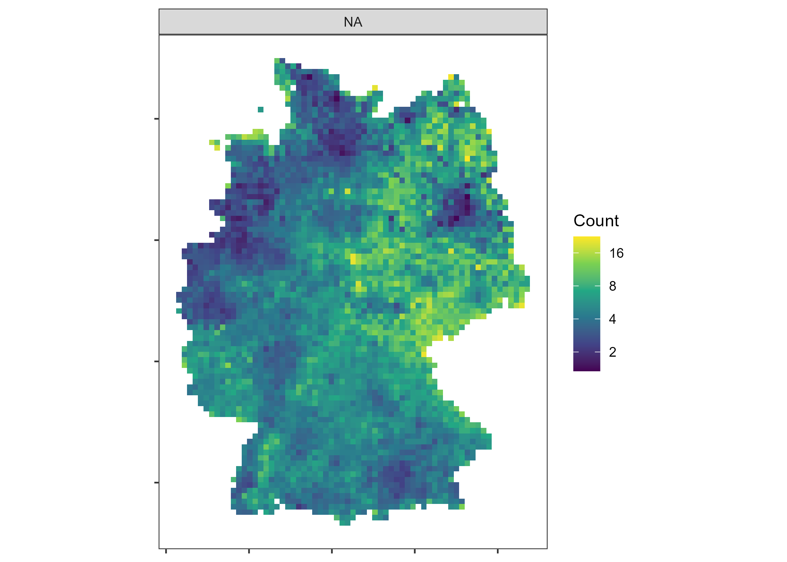

As part of the German census, a number of socio-economic indicators are published at a small-scale grid level (100m, 1km, 10km). Usually the corresponding data files are very large and hard to work with. z22 aims to quickly and efficiently retrieve German census grid data. The package also eases comparisons to grid data from the census 2011 by establishing a standardized feature format.
Powered by the z22data data repository which hosts the census grid data in small and digestible chunks. Based on the predecessor package z11 which allows easy access to the gridded data from the Census 2011.
Example
The package contains a main function, z22_data, to retrieve and process census grid data. The following example downloads a feature grid on the vacancy share in Germany at a 1x1 km resolution.
library(z22)
library(terra)
grid_vac <- z22_data("vacancies", res = "10km", rasterize = TRUE)
grid_vac
#> class : SpatRasterDataset
#> subdatasets : 1
#> dimensions : 87, 65 (nrow, ncol)
#> nlyr : 1
#> resolution : 10000, 10000 (x, y)
#> extent : 4035000, 4685000, 2685000, 3555000 (xmin, xmax, ymin, ymax)
#> coord. ref. : ETRS89-extended / LAEA Europe (EPSG:3035)
#> source(s) : memory
#> names : cat_0Code for the plot
library(ggplot2)
df_vac <- z22_pivot_longer(grid_vac, "vacancies")
ggplot(df_vac) +
geom_tile(aes(x, y, fill = value)) +
coord_sf(crs = 3035) +
facet_wrap(~category, nrow = 2) +
scale_fill_viridis_c("Share", na.value = "transparent", transform = "log2") +
theme_bw() +
labs(x = NULL, y = NULL) +
theme(panel.grid = element_blank(), axis.text = element_blank())
Available data
| Theme | Name | Description | Zensus22 | Zensus11 (100m) | Zensus11 (1km) |
|---|---|---|---|---|---|
| Population | population |
Population | ✅ | ✅ | ✅ |
| Population | citizens |
Number of german citizens, 18 or older | ✅ | ❌ | ❌ |
| Population | foreigners |
Share of foreigners | ✅ | ❌ | ✅ |
| Population | foreigners_from_18 |
Share of foreigners, 18 or older | ✅ | ❌ | ❌ |
| Population | birth_country |
Country of birth (groups) | ✅ | ✅ | ❌ |
| Population | sex |
Sex | ❌ | ✅ | ❌ |
| Population | women |
Share of women | ❌ | ❌ | ✅ |
| Population | religion |
Religion | ❌ | ✅ | ❌ |
| Population | citizenship |
Citizenship | ✅ | ✅ | ❌ |
| Population | citizenship_group |
Citizenship (groups) | ✅ | ✅ | ❌ |
| Population | citizenship_origin |
Citizenship by selected countries | ❌ | ✅ | ❌ |
| Population | citizenship_total |
Number of citizenships | ❌ | ✅ | ❌ |
| Population | age_avg |
Average age | ✅ | ❌ | ✅ |
| Population | age_short |
Age (five classes of years) | ✅ | ✅ | ❌ |
| Population | age_long |
Age (ten years age groups) | ✅ | ✅ | ❌ |
| Population | age_under_18 |
Share of people under 18 | ✅ | ❌ | ✅ |
| Population | age_from_65 |
Share of people 65 or older | ✅ | ❌ | ✅ |
| Population | marital_status |
Marital status | ✅ | ✅ | ❌ |
| Families | families |
Total number of families | ✅ | ✅ | ❌ |
| Families | family_type |
Type of core family (by children) | ✅ | ✅ | ❌ |
| Families | family_size |
Size of core family | ❌ | ✅ | ❌ |
| Households | households |
Total number of private households | ✅ | ✅ | ❌ |
| Households | household_family |
Private households by family types | ❌ | ✅ | ❌ |
| Households | household_lifestyle |
Private households by lifestyle | ❌ | ✅ | ❌ |
| Households | household_senior |
Private households by senior status | ❌ | ✅ | ❌ |
| Households | household_size_avg |
Average household size | ✅ | ❌ | ✅ |
| Households | household_size_group |
Household size (groups) | ✅ | ✅ | ❌ |
| Dwellings | dwellings |
Total number of dwellings | ✅ | ✅ | ❌ |
| Dwellings | rent_avg |
Average net cold rent | ✅ | ❌ | ❌ |
| Dwellings | dwelling_occupancy |
Use by household occupancy | ❌ | ✅ | ❌ |
| Dwellings | dwelling_ownership_home |
Ownership of the dwelling | ❌ | ✅ | ❌ |
| Dwellings | dwelling_ownership_property |
Dwellings by form of ownership | ❌ | ✅ | ❌ |
| Dwellings | owner_occupier |
Share of owner occupiers | ✅ | ❌ | ❌ |
| Dwellings | vacancies |
Share of vacancies | ✅ | ❌ | ✅ |
| Dwellings | market_vacancies |
Share of market active vacancies | ✅ | ❌ | ❌ |
| Dwellings | inhabitant_space |
Average living space per inhabitant | ✅ | ❌ | ✅ |
| Dwellings | dwelling_space |
Average living space per dwelling | ✅ | ❌ | ✅ |
| Dwellings | floor_space |
Floor space of the dwelling (10m² intervals) | ✅ | ✅ | ❌ |
| Dwellings | dwelling_rooms |
Dwellings by number of rooms | ✅ | ✅ | ❌ |
| Dwellings | dwelling_constr_year |
Dwellings by construction year (microcensus classes) | ❌ | ✅ | ❌ |
| Dwellings | dwelling_building_dwellings |
Dwellings by number of dwellings in the building | ❌ | ✅ | ❌ |
| Dwellings | dwelling_building_size |
Dwellings by building type and size | ✅ | ✅ | ❌ |
| Dwellings | dwelling_building_type |
Dwellings by residential usage type | ❌ | ✅ | ❌ |
| Dwellings | dwelling_building_design |
Dwelling by building design | ❌ | ✅ | ❌ |
| Dwellings | dwelling_heat_type |
Dwellings by predominant heating type | ✅ | ✅ | ❌ |
| Dwellings | dwelling_heat_src |
Dwellings by energy source of heating | ✅ | ❌ | ❌ |
| Buildings | buildings |
Total number of buildings | ✅ | ✅ | ❌ |
| Buildings | building_ownership_property |
Buildings by form of ownership | ❌ | ✅ | ❌ |
| Buildings | building_constr_year |
Buildings by construction year (microcensus classes) | ✅ | ✅ | ❌ |
| Buildings | building_dwellings |
Residential buildings by number of dwellings in the building | ✅ | ✅ | ❌ |
| Buildings | building_size |
Residential buildings by building type and size | ✅ | ✅ | ❌ |
| Buildings | building_type |
Buildings by residential usage type | ❌ | ✅ | ❌ |
| Buildings | building_design |
Buildings by building design | ❌ | ✅ | ❌ |
| Buildings | building_heat_type |
Buildings by predominant heating type | ✅ | ✅ | ❌ |
| Buildings | building_heat_src |
Buildings by energy source of heating | ✅ | ❌ | ❌ |